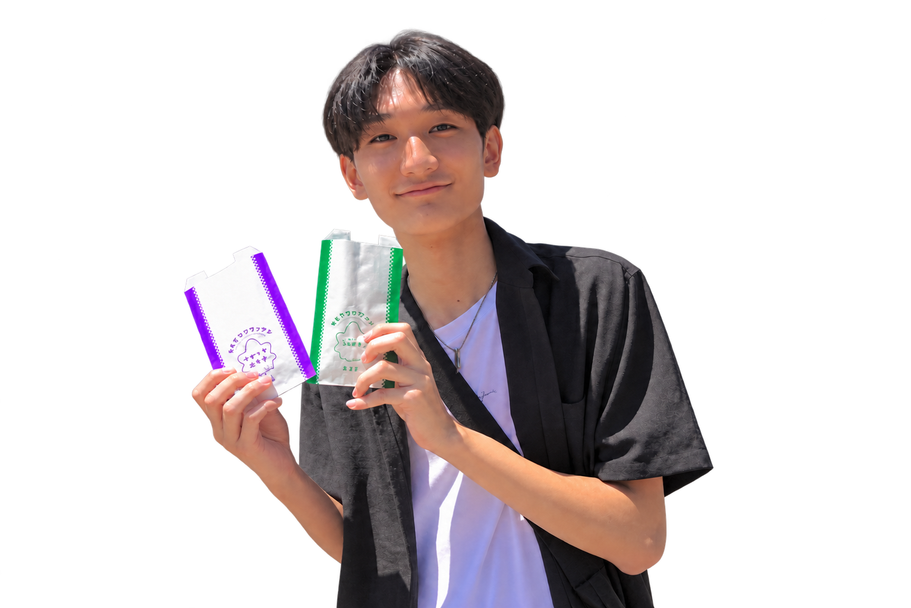

制作で大切にしていること
身の回りで感じた課題や、過去のプロダクト開発中に気づいた課題を出発点に、解決につながるプロダクトを考えています。自分のスキルアップにつながる方法や技術を選び、手を動かしながら開発することを大切にしています。

Web開発とAIに関心を持つ高専生です。
大阪公立大学工業高等専門学校に2023年入学。知能情報コースで学び、2028年卒業予定です。
Web開発カリキュラムを修了し、現在は運営側として、受講学生のPull Requestレビューや進捗確認などの学習支援を担当しています。カリキュラムで触れたGoに、現在強い関心を持っています。
学習支援の活動を見る身の回りで感じた課題や、過去のプロダクト開発中に気づいた課題を出発点に、解決につながるプロダクトを考えています。自分のスキルアップにつながる方法や技術を選び、手を動かしながら開発することを大切にしています。
課題整理など開発工程の上流から関われるシステムエンジニアを志望しています。幅広い業界・業種の課題に向き合えるSIerや、現場と近い距離で課題解決に関われる社内SEの仕事にも関心があります。
現在は、フロントエンドまたはバックエンドのWeb開発に就業型で関わり、実務に即した開発経験とスキルを身につけられるインターンシップを探しています。
課題、担当範囲、技術上の判断が分かる3件を選びました。詳細では、成果だけでなく制約や検証条件も記載しています。
学習支援、企業インターン、コンテスト・展示の経験を区別して掲載しています。企業インターンでは開発を担当していません。
Web開発を学ぶ高専生向けカリキュラムの運営に参画しています。自身もカリキュラムを修了し、執行代として受講学生のPull Requestレビュー、進捗確認、学習支援を担当しています。
Kosen Tech Club公式サイトを見るECサイトに関連する業務について、現状業務のヒアリング、課題整理、解決案の提案・発表までを経験しました。開発は担当していません。
現行システムの利用者へのヒアリング、課題整理、解決案の提案・発表までを経験しました。開発は担当していません。
災害救助支援システム「Acous」で約90チーム中30チームに選出され、本選会場で約100人へ説明しました。
M5StickCを使った体感型シューティングを改良し、作品展示と体験対応を行いました。
学習や制作の過程で作ったWeb、デスクトップ、ゲームの記録です。
制作物や活動へのご質問、インターンシップ・面談、学生エンジニア向けイベントのご相談は、メールでご連絡ください。公開しているコードはGitHubから確認できます。